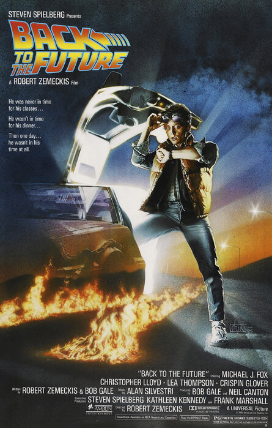
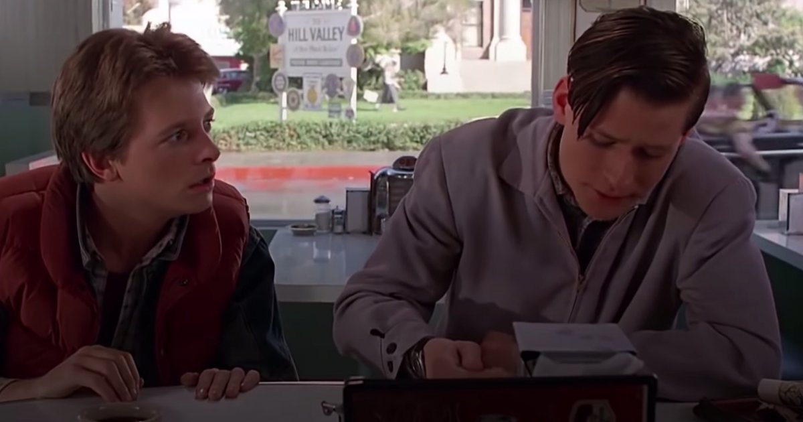

RETOUR VERS LE FUTUR
- De : ROBERT ZEMECKIS
- Avec : MICHAEL J. FOX, CHRISTOPHER LLOYD, LEA THOMSON, CRISPIN GLOVER, THOMAS F. WILSON, CLAUDIA WELSS
- Durée : 1H56
- Nationalité : USA
- Sortie : 30 OCTOBRE 1985
- SF/COMEDIE , VF
Le jeune Marty McFly mène une existence anonyme, auprès de sa petite amie Jennifer, seulement troublée par sa famille en crise et un proviseur qui serait ravi de l'expulser du lycée. Ami de l'excentrique professeur Emmett Brown, il l'accompagne tester sa nouvelle expérience : le voyage dans le temps via une DeLorean modifiée
<< Voir la bande-annonce
- MERCREDI 17 MARS
- JEUDI 17 MARS
- VENDREDI 17 MARS
- SAMEDI 17 MARS
- DIMANCHE 18 MARS
- LUNDI 18 MARS
- MARDI 19 MARS
- 13 h 35
- 15 h 45
- 18 h 00
- 20 h 20
- 22 h 40